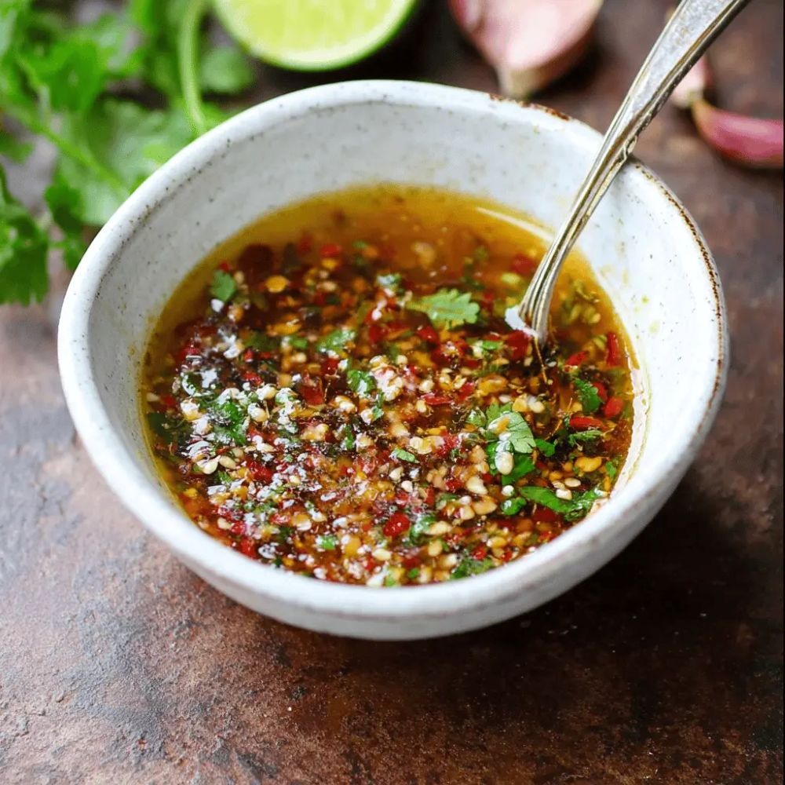

Välkommen till min matdagbok! Matlagning är ett stort intresse för mig och jag tycker om att prova nya recept och smakkombinationer. Den här sidan är skapad för dig som vill börja laga mat men inte vet var du ska börja. Här delar jag med mig av enkla recept på rätter som jag själv har lagat, med målet att inspirera och göra matlagning både rolig och lätt att komma igång med.
Recept
Såser
Krämig jordnötssås
Ingredienser:
- 2 msk jordnötssmör
- 1 msk soja
- 1 tsk röd currypasta
- 1 dl kokosmjölk
- 1 tsk limejuice
Gör så här:
- Blanda alla ingredienser i en kastrull.
- Värm försiktigt under omrörning.
- Servera till kyckling, nudlar eller grillade grönsaker.
Fisksås
Ingredienser:
- 1 msk Lime
- 1 tsk Socker
- 1 mask Fisksås
- Finhackad röd chili
- Finhackad koriander
- Finhackad ingefära
- Finhackad vitlök
Gör så här:
- Blanda ner alla ingredienser i en skål.
- Smaka av efter behov.
- Servera till vårrullar eller grillat.

Kött
Höstig köttgryta (4 portioner)
- 500 g grytbitar av nötkött
- morötter
- palsternackor
- gul lök
- 200 g champinjoner
- 2 msk tomatpuré
- 5 dl köttbuljong
- 2 dl matlagningsgrädde
- 1 tsk torkad timjan
- 2 lagerblad
- Salt och svartpeppar
- Smör till stekning
Gör så här:
- Hetta upp smör i en stor gryta och bryn nötköttet i omgångar tills det fått fin färg.
- Krydda med salt och svartpeppar.
- Tillsätt den hackade löken och stek några minuter tills den mjuknar.
- Skala morötterna och palsternackorna och skär dem i bitar.
- Skala och hacka löken. Dela champinjonerna i mindre bitar.
- Rör sedan ner tomatpurén och låt den fräsa med någon minut.
- Lägg i morötter, palsternackor och champinjoner.
- Häll över köttbuljongen och tillsätt timjan samt lagerblad.
- Koka upp grytan och sänk sedan värmen.
- Låt sjuda under lock i cirka 1,5 timme, eller tills köttet är riktigt mört.
- Rör ner matlagningsgrädden och låt grytan koka ytterligare 10 minuter.
- Smaka av med salt och svartpeppar. Ta bort lagerbladen före servering.
- Servera gärna grytan med kokt potatis, ris eller ett gott bröd.
Kyckling
Ugnsbackad kyckling
- 800 g kycklingfilé
- 2 msk olivolja
- 2 msk honung
- 3 vitlöksklyftor, pressade
- 1 msk soja
- 1 tsk paprikapulver
- 1 tsk timjan
- Salt och svartpeppar
Gör så här:
- Sätt ugnen på 200°C.
- Blanda olivolja, honung, pressad vitlök, soja, paprikapulver och timjan i en skål.
- Krydda kycklingfiléerna med salt och svartpeppar.
- Lägg kycklingen i en ugnsform och pensla eller häll över marinaden. Vänd runt så att kycklingen täcks ordentligt.
- Tillaga i ugnen i cirka 25–30 minuter, eller tills kycklingen är genomstekt och har en innertemperatur på 72°C.
- Ös gärna kycklingen med skyn en gång under tillagningen för extra saftighet.
- Låt vila i några minuter före servering.